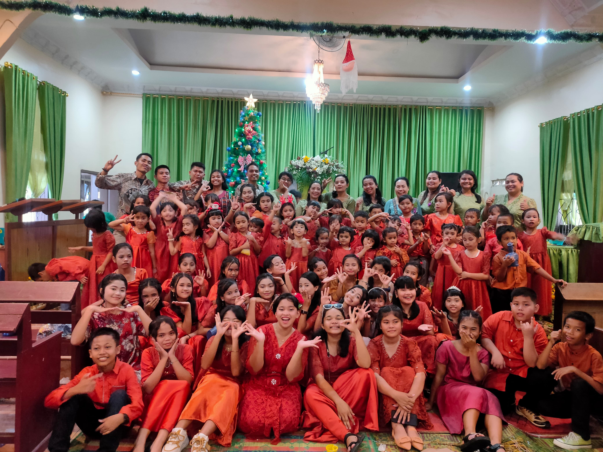
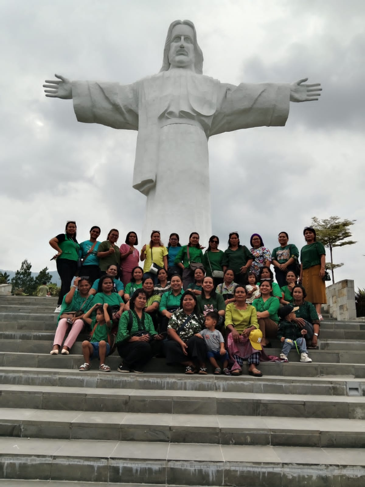
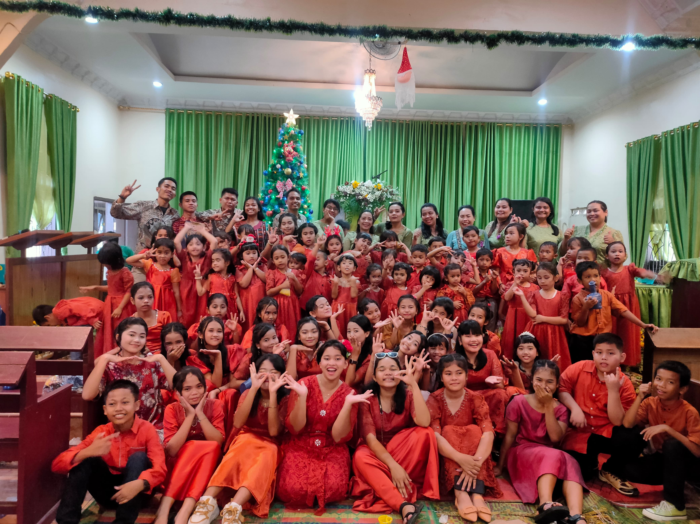
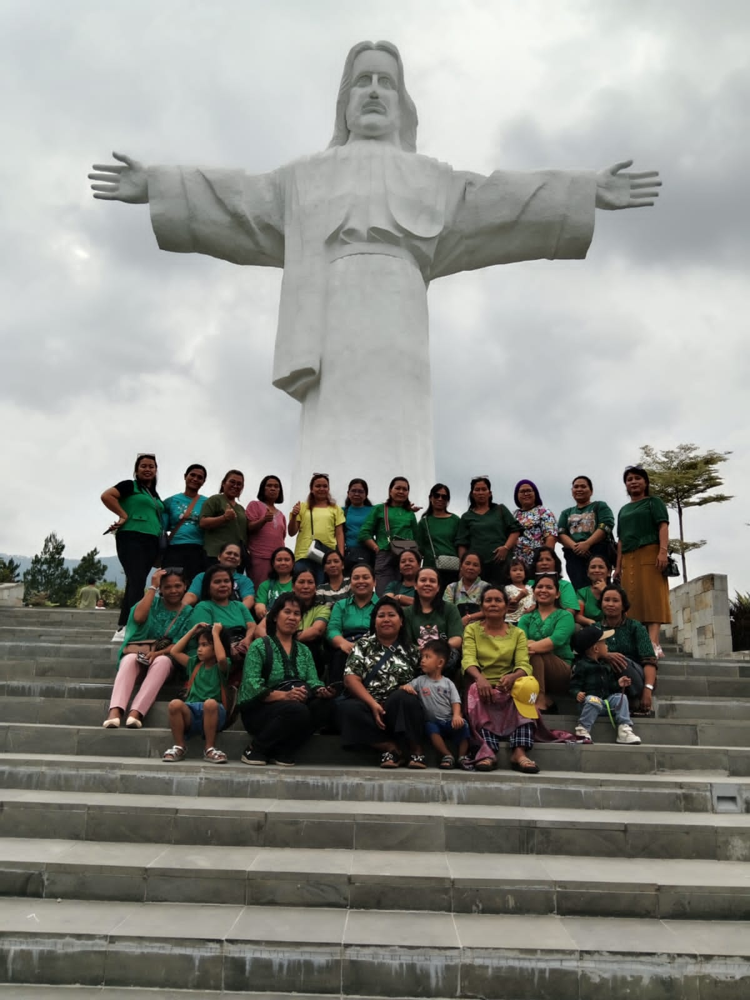

GBKP NAMO RAMBE
Gereja Batak Karo Protestan Runggun Namo Rambe
Klasis Medan Namo Rambe
Gereja Batak Karo Protestan Runggun Namo Rambe
Klasis Medan Namo Rambe
Marturia (dari bahasa Yunani: martyria) adalah salah satu istilah yang dipakai gereja dalam melakukan aktivitas imannya, sebagai tugas panggilan gereja, yaitu dalam hal kesaksian iman.[1] Kesaksian iman yang dimaksud adalah pemberitaan Injil sebagai berita keselamatan bagi manusia.[1] Marturia biasanya disandingkan dengan tugas gereja yang lain, yaitu koinonia yang berarti persekutuan dan diakonia atau pelayanan.[1]
Koinonia adalah anglikisasi dari kata Yunani (κοινωνία) yang berarti persekutuan dengan partisipasi intim. Kata ini sering digunakan dalam Perjanjian Baru dari Alkitab untuk menggambarkan hubungan dalam gereja Kristen perdana serta tindakan memecahkan roti dalam cara yang ditentukan Kristus selama perjamuan Paskah [John 6:48-69, Matius 26: 26-28, 1 Korintus 10:16, 1 Korintus 11:24]. Akibatnya kata tersebut digunakan dalam Gereja Kristen untuk berpartisipasi, seperti kata Paulus, dalam Persekutuan – dengan cara ini mengidentifikasi keadaan ideal persekutuan dan masyarakat yang harus ada – Komuni(persekutuan).
Dalam bahasa Yunani, melayani adalah Diakoneo (διακονεο), yang artinya melakukan segala sesuatu tanpa beban, sebab melayani bukanlah beban, namun sebuah kehormatan. Melayani adalah suatu kegiatan membantu orang lain atau memberikan diri untuk menolong orang lain. Melayani adalah suatu anugerah, karena itu kita harus mempergunakan kesempatan dan kepercayaan itu sebaik mungkin. Sebab jika kita dipanggil untuk melayani maka itu artinya kita dipercaya oleh Allah untuk menjadi alat-Nya. Kita yang berdosa ini, oleh karena anugerah-Nya, dilayakkan untuk melayani. Melayani juga merupakan tanda cinta kita kepada Tuhan. Yohanes 14:15, berkata: “Jikalau kamu mengasihi Aku, kamu akan menuruti segala perintah-Ku.” Jika kita mengasihi Tuhan itu berarti kita harus melakukan perintah Tuhan yaitu melayani bukan dilayani.
| JADWAL IBADAH MINGGU | CONTACT | ||
|---|---|---|---|
| Kebaktian KA/KR | : | 08.00 WIB | gbkprgnamorambe@gmail.com |
| Kebaktian UMUM | : | 08.00 WIB | 0821-6341-2546 |
"Karena begitu besar kasih Allah akan dunia ini, sehingga Ia telah mengaruniakan Anak-Nya yang tunggal, supaya setiap orang yang percaya kepada-Nya tidak binasa, melainkan beroleh hidup yang kekal."
 


